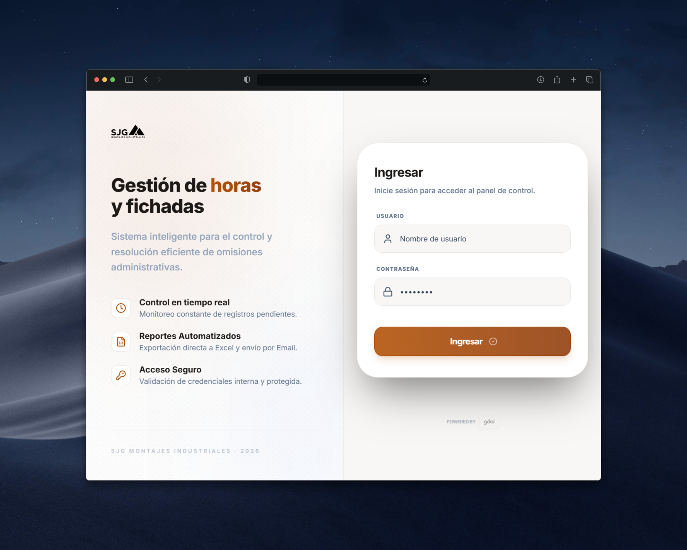

EN PRODUCCIÓN

Formado en la UTN, cursando Diplomatura en Coderhouse. Construyo aplicaciones con el stack MERN y .NET Core, enfocado en resultados concretos.
Construyo aplicaciones completas: interfaces con React y Next.js, APIs con Node.js / Express o ASP.NET Core, y bases de datos con SQL Server y MongoDB. Me interesa entender el sistema de punta a punta.
Sistemas con usuarios reales, problemas de negocio concretos. No solo ejercicios de laboratorio.
Tecnicatura en Programación · UTN
Diplomatura Full Stack · Coderhouse
Git Flow, Scrum y entregas iterativas. Trabajo con feedback continuo y objetivos claros.
Gestión de asistencia para 50+ operarios. Automaticé registros con herramientas propias, reduciendo el error humano un 40% y recuperando 10hs semanales de trabajo manual.
React, Next.js, Node.js, Express y MongoDB con metodologías ágiles.
Algoritmos, estructuras de datos y desarrollo backend con C# / .NET Core.
Interfaces reactivas y componentes reutilizables.
APIs robustas y gestión de datos.
Flujos de trabajo y despliegue continuo.